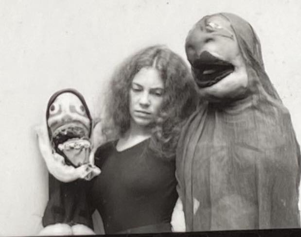
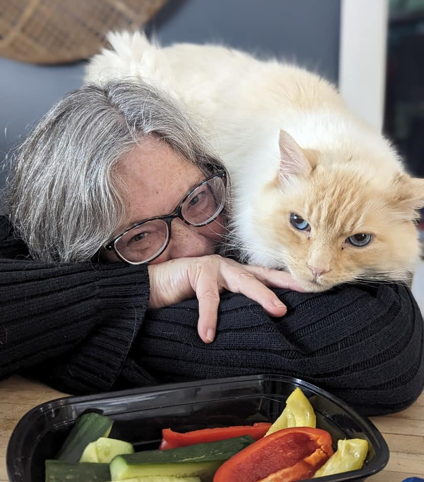
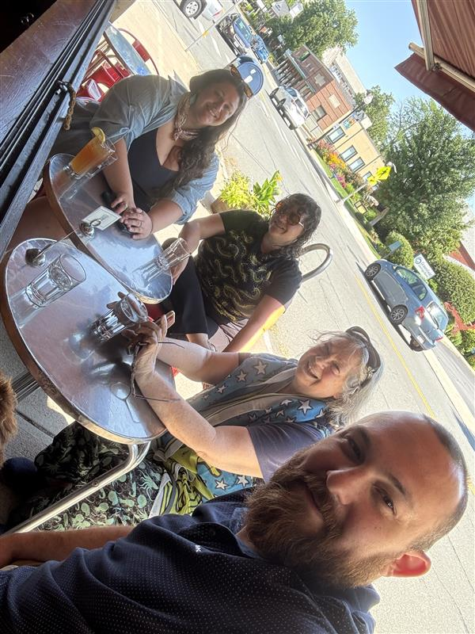
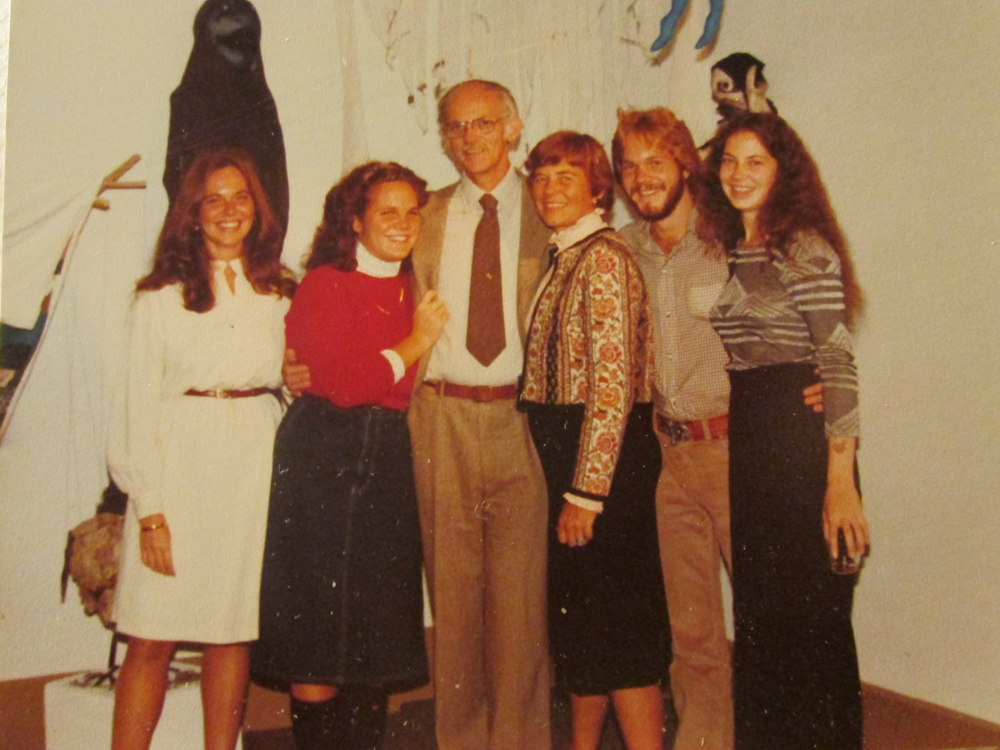
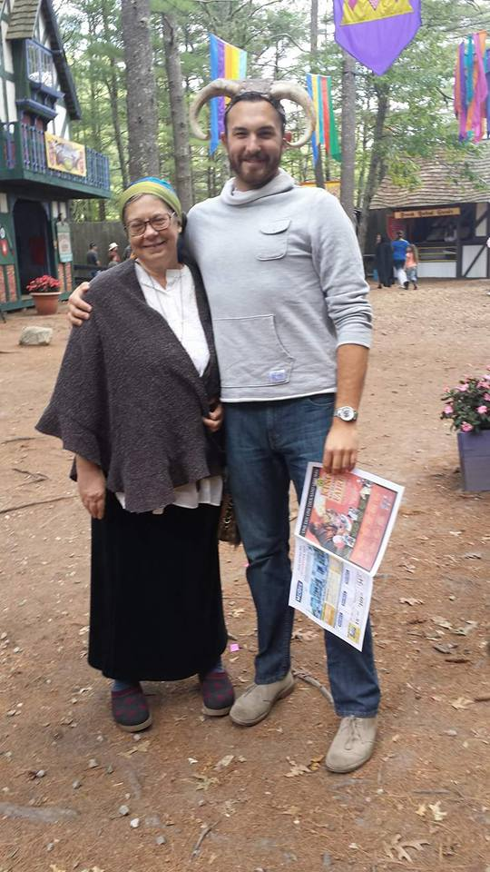

About the Artist


Art has always been part of Karen’s life. Creativity runs deep in her family: her father, Thomas Swan, was an artist across many mediums, including metal and wood sculpting, and her mother, Julia Swan, is an accomplished quilter, sculptor, painter, and more.
Over the years, Karen has explored all kinds of artistic mediums herself, but she is most drawn to fabric collage and hand puppets, often incorporating real animal bones into her work. Her pieces are thoughtful, textured, and full of personality. Each one is shaped by a lifelong love of making things by hand.
After retiring from her career as an art teacher, Karen began casually sharing photos of her creations on social media. Before long, her work started gaining attention within her own circle, and requests from friends and family soon followed.
When she’s not creating, Karen enjoys swimming, reading, chopping wood, reading, spending time with close friends, and, of course, reading. She is also the proud mother of three beautiful children: Blue, Anna, and Ben.

